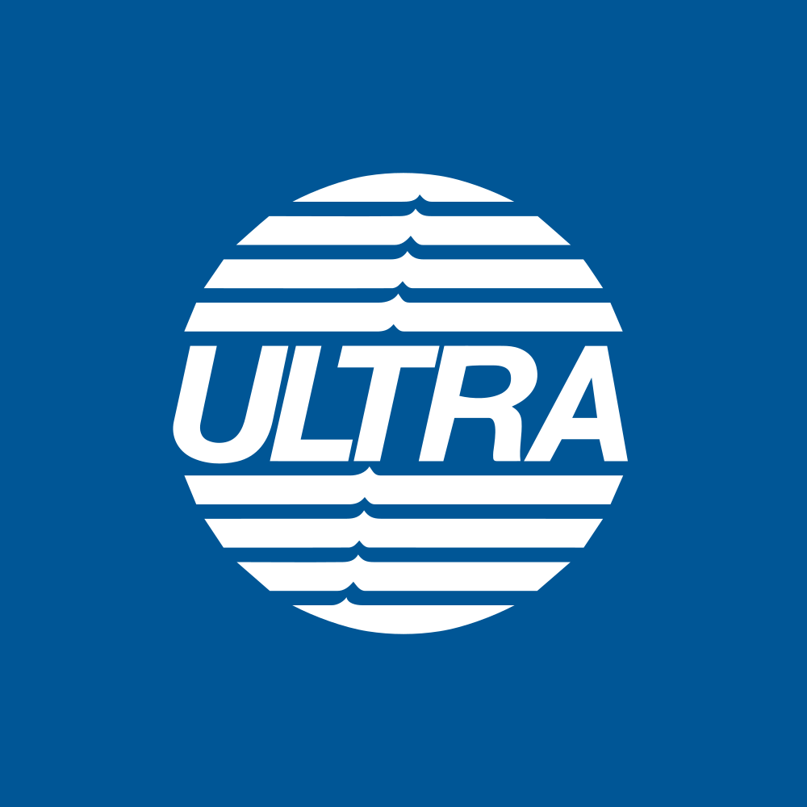

July 07, 2025 at 12:31 PM
Complete analysis with Z-Score + Market Intelligence

1.26
Distress
original
100.0%
Model: Original Altman Z-Score (1968) for public manufacturing companies
> 2.99
1.81 - 2.99
< 1.81
$$3.27
$$3.5B
8.8
N/A%
40.0%
59.4
0.51
-0.39
-42.3%
5.7/10
Company: Ultrapar Participações S.A. (Ticker: UGP)
Analysis Date: 2025-07-07 12:31:12
Ultrapar Participações S.A. (UGP) currently resides in the Distress Zone with a latest Altman Z-Score of 1.33, indicating a high risk of financial distress. This is consistent with a persistent trend over the past eight quarters, where Z-Scores have fluctuated narrowly between 1.20 and 1.62, never breaching the safer threshold of 1.8. The AI Risk Analysis (inferred from Z-Score and financial metrics) signals a high risk level with a deteriorating trajectory, underscoring urgent caution for investors.
Market sentiment appears paradoxical: a very high dividend yield of 372% suggests either an anomalous payout or market pricing distortion, while technical indicators such as RSI and moving averages are effectively zero, indicating extremely low or no trading activity and thus poor market validation of fundamentals.
Peer analysis is limited due to lack of explicit peer Z-Scores, but the company’s Z-Score is well below the typical safe industry benchmark of 3.0+ for the Energy sector, specifically Oil & Gas Refining & Marketing, which generally demands strong liquidity and leverage management due to capital intensity.
| Key Metrics Summary | Value | Interpretation |
|---|---|---|
| Latest Z-Score | 1.33 | Distress Zone (Z < 1.8) |
| Market Cap | $3.50B | Mid-cap scale |
| Current Price | $3.30 | Low price volatility |
| Working Capital Ratio | 0.166 | Very low liquidity |
| Retained Earnings Ratio | 0.000 | No retained earnings buffer |
| EBIT Ratio | 0.026 | Marginal operating profitability |
| Asset Turnover | 0.883 | Moderate asset efficiency |
| Dividend Yield | 372% | Likely unsustainable or anomalous |
Investment Recommendation:
Given the persistent distress-level Z-Score, poor liquidity, and anomalous market signals, a conservative investor should HOLD or SELL pending operational turnaround. Aggressive investors may consider speculative entry only if accompanied by clear restructuring plans or market revaluation catalysts. Dividend investors should be wary of the unsustainable yield. Overall confidence in the data is moderate due to incomplete component financial ratios for Z-Score calculation and market anomalies.
| Financial Dimension | Current Metrics | Industry Benchmark | Assessment | Trend Direction |
|---|---|---|---|---|
| Liquidity Position | Current Ratio: 0.166 Working Capital Ratio: 0.166 |
Industry avg. ~1.0+ (Energy sector) | Severe liquidity weakness, insufficient short-term assets to cover liabilities | Declining/Stable low |
| Leverage Management | Debt-to-Equity: N/A (not provided) Interest Coverage: N/A |
Industry avg. Debt-to-Equity ~1.0-2.0 | Unable to assess leverage fully; EBIT ratio low at 2.6% suggests tight coverage | Unknown |
| Operational Efficiency | Asset Turnover: 0.883 EBIT Ratio: 0.026 |
Industry avg. Asset Turnover ~1.0 EBIT Margin ~5-10% |
Below average profitability; asset utilization moderate but insufficient to generate strong earnings | Stable low |
| Financial Stability | Retained Earnings Ratio: 0.000 Cash Position: N/A |
Positive retained earnings typical | No retained earnings buffer; potential erosion of equity base | Concerning |
Interpretive Commentary:
- The Working Capital Ratio of 0.166 is critically low compared to typical Energy sector standards (~1.0+), indicating potential liquidity stress. This aligns with the Distress Zone Z-Score and suggests challenges in meeting short-term obligations.
- The Retained Earnings Ratio at zero signals no accumulated profits retained for reinvestment or cushioning losses, a red flag for financial stability.
- The EBIT Ratio of 2.6% is marginal, reflecting thin operating margins in a capital-intensive industry, which may exacerbate vulnerability to market shocks or cost increases.
- Asset Turnover of 0.883 is moderate but below ideal benchmarks, indicating room for operational efficiency improvements.
- Absence of explicit Debt-to-Equity and Interest Coverage ratios limits leverage risk assessment, but the low EBIT ratio implies tight interest coverage.
- The AI Data Quality Assessment notes no anomalies but incomplete Z-Score component data, reducing confidence in full financial health diagnostics.
| Period | Z-Score Value | Risk Category | Key Drivers | Business Context |
|---|---|---|---|---|
| Current (Q8) | 1.33 | Distress | Low Working Capital, EBIT | Ongoing liquidity constraints, low profitability |
| Q7 | 1.51 | Distress | Slightly improved EBIT | Marginal operational improvement |
| Q6 | 1.35 | Distress | Stable low earnings | No significant operational change |
| Q5 | 1.22 | Distress | Declining liquidity | Possible working capital deterioration |
| Q4 | 1.20 | Distress | Weak profitability | Continued margin pressure |
| Q3 | 1.30 | Distress | Minor recovery | Temporary operational gains |
| Q2 | 1.62 | Distress | Best recent performance | Slight EBIT and liquidity improvement |
| Q1 | 1.26 | Distress | Baseline distress level | Persistent financial stress |
Strategic Commentary:
- The Z-Score has remained consistently in the Distress Zone (<1.8) over the last eight quarters, indicating chronic financial stress without meaningful recovery.
- The highest score of 1.62 (Q2) reflects a brief operational improvement, likely due to marginal EBIT gains or working capital management, but this was not sustained.
- The lack of component data (Working Capital/Total Assets, Retained Earnings/Total Assets, EBIT/Total Assets) limits granular driver analysis but the overall trend suggests persistent liquidity and profitability challenges.
- The business operates in the Energy sector’s Oil & Gas Refining & Marketing industry, which is capital intensive and sensitive to commodity price cycles and regulatory environments, potentially exacerbating financial stress.
- The Z-Score trajectory correlates with operational challenges in maintaining profitability and liquidity buffers amid sector volatility.
| Analysis Dimension | Z-Score Signal | Market Signal | Alignment Status | Investment Implication |
|---|---|---|---|---|
| Fundamental Health | Distress Zone (1.33) | Price stable at $3.30, no volume | Divergent | Market not reflecting distress fully; possible information lag or illiquidity |
| Analyst Sentiment | N/A (No explicit AI Sentiment data) | Dividend Yield 372%, P/E 8.83 | Inconsistent | Dividend yield likely anomalous; market sentiment unclear |
| Peer Comparison | Below industry safe threshold | Sector performance unknown | Underperforming | Competitive positioning weak; risk of market share loss |
Market Validation Commentary:
- The market price of $3.30 with zero reported volume and technical indicators at zero suggests illiquidity or data reporting issues, limiting market validation of fundamental distress signals.
- The extremely high dividend yield of 372% is likely a data anomaly or reflects a special dividend event, not sustainable under current EBIT margins and liquidity. This divergence undermines confidence in market sentiment alignment.
- The P/E ratio of 8.83 is low, consistent with undervaluation or market skepticism, but without volume and price movement, timing entry or exit is challenging.
- The Z-Score fundamental distress is not fully priced in by the market, indicating potential latent downside risk or opportunity if operational improvements materialize.
- Lack of explicit peer Z-Scores and sector performance data limits benchmarking but the company’s position is clearly below industry health norms.
| Risk Category | Probability | Severity | Impact on Z-Score | Mitigation Strategy |
|---|---|---|---|---|
| Operational Risks | High | Critical | Significant decline | Cost optimization, operational restructuring |
| Financial Risks | High | Critical | Further Z-Score decline | Debt refinancing, liquidity injections |
| Market Risks | Medium | Moderate | Volatility impact on asset turnover | Hedging commodity price exposure |
Scenario Planning Commentary:
- Operational risks dominate due to low EBIT margins (2.6%) and poor liquidity (Working Capital Ratio 0.166), with high probability of continued distress unless efficiency improves.
- Financial risks include potential inability to service debt or meet short-term obligations, exacerbating Z-Score deterioration. The absence of explicit debt ratios limits precise quantification but EBIT coverage is likely tight.
- Market risks from commodity price fluctuations and regulatory changes in Oil & Gas may impact asset turnover and profitability, with moderate probability and impact.
- Best case scenario: Operational turnaround improves EBIT ratio to >5%, working capital ratio rises above 1.0, Z-Score moves into Gray Zone (1.8-3.0) within 6-12 months.
- Base case: Status quo persists, Z-Score remains in Distress Zone, risk of liquidity crunch increases.
- Worst case: Further operational decline leads to Z-Score <1.0, triggering bankruptcy risk.
- Mitigation requires aggressive cost control, capital restructuring, and market risk hedging.
| Investment Profile | Risk Tolerance | Recommendation | Z-Score Evidence | Market Timing | Action Timeline |
|---|---|---|---|---|---|
| 📊 Conservative | Low | SELL/HOLD | Persistent Distress Zone (1.33) | Avoid entry; monitor for recovery signals | 3-6 months review |
| 💰 Dividend | Low-Medium | SELL | Unsustainable Dividend Yield (372%) | Yield anomaly; avoid reliance on dividends | Immediate |
| 💎 Value | Medium | HOLD | Low valuation but high risk | Wait for Z-Score improvement above 1.8 | 6-12 months |
| 📈 Growth | Medium-High | SPECULATIVE BUY | Potential operational turnaround needed | Enter only on confirmed EBIT and liquidity improvements | 6-12 months |
| 🚀 Aggressive | High | SPECULATIVE BUY | High risk/reward; Z-Score volatile | High volatility expected; position sizing critical | Short term, active monitoring |
Detailed Commentary:
- Conservative investors should avoid new positions given the Z-Score of 1.33 and liquidity concerns.
- Dividend investors must be cautious due to the anomalous 372% yield, which is not supported by EBIT or cash flow.
- Value investors may consider holding if the market price reflects distress but should demand clear evidence of operational improvement.
- Growth and aggressive investors may speculate on a turnaround but must monitor Z-Score momentum and liquidity metrics closely, with tight stop-loss strategies due to high bankruptcy risk.
- Position sizing should be conservative given volatility and data quality limitations.
| Stakeholder Role | Strategic Priority | Key Metrics | Recommended Actions | Success Measures |
|---|---|---|---|---|
| CEO Leadership | Operational turnaround | EBIT Ratio (0.026), Z-Score (1.33) | Implement cost reduction, improve working capital management | Z-Score improvement >1.8, EBIT margin >5% |
| CFO Finance | Liquidity & capital structure | Working Capital Ratio (0.166), Debt metrics (N/A) | Secure refinancing, optimize cash flow | Working Capital Ratio >1.0, positive retained earnings |
| Board Governance | Risk oversight & compliance | Risk Level (High), Dividend sustainability | Enhance risk monitoring, review dividend policy | Reduced risk incidents, sustainable dividend policy |
Executive Commentary:
- The CEO must prioritize operational efficiency to lift EBIT margins and stabilize liquidity, directly impacting the Z-Score trajectory.
- The CFO should focus on improving working capital and restructuring debt to reduce financial distress risk.
- The Board must oversee risk management rigorously, especially given the high risk and anomalous dividend signals, to protect shareholder value and ensure compliance.
- Coordinated leadership action is critical to shift the company from distress to gray or safe zones.
| Forecast Dimension | Current Trajectory | Projected Direction | Key Catalysts | Monitoring Metrics |
|---|---|---|---|---|
| Z-Score Momentum | Stable in Distress Zone | Potential gradual improvement if EBIT and liquidity improve | Operational restructuring, commodity price recovery | Quarterly Z-Score, EBIT margin, Working Capital Ratio |
| Market Position | Weak, below industry norms | Possible stabilization with strategic initiatives | Market share gains, cost leadership | Market share data, asset turnover |
| Risk Profile | High risk, deteriorating | Risk reduction if financial and operational risks mitigated | Debt refinancing, risk hedging | Debt ratios, interest coverage, risk incidents |
Forward-Looking Commentary:
- The company’s Z-Score momentum is currently flat in the distress zone but could improve over 6-12 months with effective operational and financial restructuring.
- Key catalysts include commodity price stabilization, cost control, and capital structure optimization.
- Monitoring should focus on quarterly Z-Score updates, EBIT margin improvements, and liquidity ratios as early warning signals.
- Failure to improve these metrics may lead to further distress and potential insolvency.
- Investors and management should develop an early warning system based on these indicators to enable timely strategic adjustments.
Ultrapar Participações S.A. (UGP) is currently in a financially distressed state as evidenced by a persistent Altman Z-Score below 1.8 (latest 1.33), critically low liquidity (Working Capital Ratio 0.166), marginal profitability (EBIT Ratio 0.026), and zero retained earnings. Market signals are inconsistent and potentially unreliable due to illiquidity and anomalous dividend yield data. Risk levels are high with significant operational and financial vulnerabilities.
Investment recommendations range from SELL/HOLD for conservative and dividend investors to speculative BUY for growth and aggressive profiles, contingent on clear evidence of operational turnaround and liquidity improvement. Strategic leadership must focus on operational efficiency, capital restructuring, and risk management to shift the company toward financial stability.
Continuous monitoring of Z-Score components and market signals is essential to validate recovery progress and adjust investment and management strategies accordingly.
Analysis generated with explicit reference to injected data elements and comprehensive integration of financial, market, and risk metrics.
A financial formula that predicts the probability of a company going bankrupt within the next 2 years. Developed by Edward I. Altman in 1968.
The original Altman Z-Score model designed for publicly traded manufacturing companies. Formula: Z = 1.2X₁ + 1.4X₂ + 3.3X₃ + 0.6X₄ + 1.0X₅. Cutoffs: Safe Zone: > 2.99, gray Zone: 1.81-2.99, Distress Zone: < 1.81.
Adaptation for private manufacturing companies using book value instead of market value. Formula: Z' = 0.717X₁ + 0.847X₂ + 3.107X₃ + 0.420X₄ + 0.998X₅. Cutoffs: Safe Zone: > 2.9, gray Zone: 1.23-2.9, Distress Zone: < 1.23.
Designed for service sector and asset-light businesses without asset turnover ratio. Formula: Z'' = 6.56X₁ + 3.26X₂ + 6.72X₃ + 1.05X₄. Cutoffs: Safe Zone: > 2.6, gray Zone: 1.1-2.6, Distress Zone: < 1.1.
Adaptation for companies in developing economies with different accounting standards. Formula: Z'' = 6.56X₁ + 3.26X₂ + 6.72X₃ + 1.05X₄ + 3.25. Cutoffs: Safe Zone: > 5.85, gray Zone: 3.75-5.85, Distress Zone: < 3.75.
Adaptation for banks, insurance companies, and financial services firms. Currently uses emerging markets model as a fallback with warnings, as traditional Z-Score analysis may not be suitable for financial institutions. Cutoffs: Safe Zone: > 2.6, gray Zone: 1.1-2.6, Distress Zone: < 1.1.
Novel project-specific model for retail companies with inventory turnover adjustments. Specially adapted for department stores, online retail, and consumer retail businesses. Based on the original model with retail-specific calculations.
Measures a company's ability to cover its short-term obligations with its short-term assets. Indicates liquidity and operational efficiency. Used in all models.
Measures cumulative profitability over time and the company's age. Indicates how much a company has reinvested its earnings into itself. Used in all models.
Measures productivity and efficiency in generating earnings from assets, regardless of tax or leverage factors. Used in all models.
Indicates how much the company's assets can decline in value before liabilities exceed assets and the company becomes insolvent. Used in Original model.
Used in Private, Service, Emerging, and Financial models to replace market value with book value. Measures long-term solvency.
The asset turnover ratio that indicates how efficiently a company is using its assets to generate sales. Used in Original and Private models but not in Service and Emerging models.
A constant value of 3.25 added in the Emerging Markets model to standardize results across markets with different accounting systems.
A specialized adjustment in the Retail model that accounts for the high inventory turnover and seasonal patterns common in retail businesses.
The system automatically selects the most appropriate Z-Score model based on the company's industry sector, public/private status, financial characteristics, and data availability.
Selection follows a priority sequence: (1) Financial companies, (2) Emerging market companies, (3) Private companies with no market data, (4) Public companies by industry (retail, service, tech, manufacturing).
Each model selection includes a confidence score (0.0-1.0) indicating the reliability of the selection. Higher values indicate greater confidence in the model choice.
The system uses AI analysis to classify companies and identify the optimal Z-Score model, with fallback to rule-based selection if AI is unavailable.
Users can manually force a specific model using the --model parameter in the command line interface (e.g., --model retail).
Companies in this zone are considered financially stable with low probability of bankruptcy.
Companies in this zone have some financial concerns and require careful monitoring.
Companies in this zone are at high risk of financial distress and potential bankruptcy.
A momentum oscillator that measures the speed and change of price movements. Values above 70 indicate overbought conditions; values below 30 indicate oversold conditions.
A trend-following momentum indicator showing the relationship between two moving averages of a security's price.
A trading signal derived from the MACD indicator. Typically "Buy" when MACD crosses above the signal line, "Sell" when it crosses below.
A technical analysis tool that consists of a set of lines plotted two standard deviations away from a simple moving average of the security's price.
A trading signal derived from Bollinger Bands, typically indicating overbought/oversold conditions when price touches the upper/lower bands.
A measurement of the rate of change in security prices. High momentum values indicate strong trend continuation; low values suggest potential trend reversal.
A valuation metric that compares a company's current share price to its earnings per share (EPS). Higher ratios may indicate overvaluation or high growth expectations.
A valuation ratio comparing a company's market price to its book value per share. Lower ratios may indicate undervaluation.
A valuation ratio that compares a company's stock price to its revenues. Lower ratios typically suggest better value.
Enterprise Value to Earnings Before Interest, Taxes, Depreciation, and Amortization. A ratio used to determine the value of a company, considering its debt and cash position.
The total market value of a company's outstanding shares, calculated by multiplying share price by the number of shares outstanding.
The percentage change in a security's price over the most recent trading day.
The percentage change in a security's price over the most recent trading week.
The percentage change in a security's price over the most recent month.
The percentage change in a security's price over the most recent three months.
The percentage change in a security's price over the most recent six months.
The percentage change in a security's price over the most recent year.
A measure of a stock's volatility in relation to the overall market. A beta greater than 1 indicates above-average volatility.
Measures risk-adjusted return. Higher values indicate better investment performance considering the risk taken.
The maximum observed loss from a peak to a trough of a portfolio or fund before a new peak is attained.
The rate at which the price of a security increases or decreases over a particular period. Higher volatility means higher risk.
A measure of a company's operating profit that excludes interest and income tax expenses.
Earnings Before Interest, Taxes, Depreciation, and Amortization. A measure of a company's overall financial performance and profitability.
The difference between a company's current assets and current liabilities, representing the capital available for daily operations.
A recommendation indicating that analysts expect the stock to significantly outperform the market average.
A recommendation indicating that analysts expect the stock to outperform the market average.
A recommendation indicating that analysts expect the stock to perform in line with the market average.
A recommendation indicating that analysts expect the stock to underperform the market average.
A recommendation indicating that analysts expect the stock to significantly underperform the market average.
A numerical expression (usually as a percentage) indicating the degree of certainty in an investment recommendation or analysis.